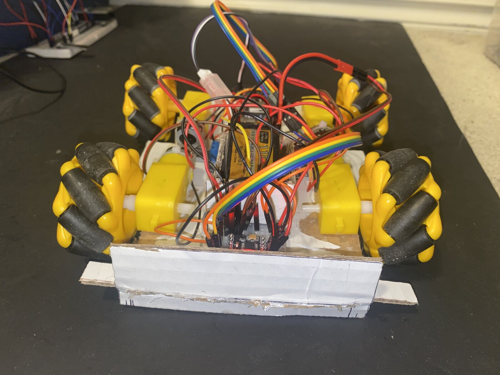
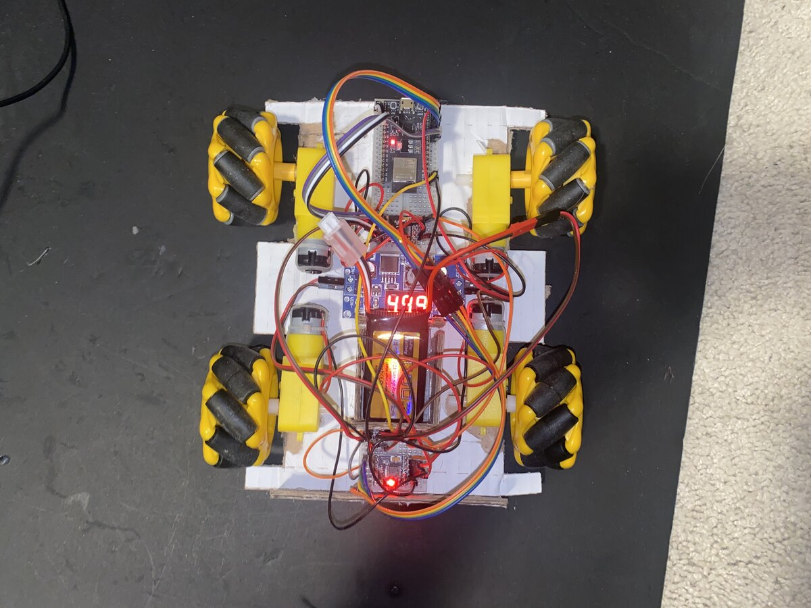

Feetball

A Bluetooth soccer robot I built because I would rather be in front of the TV than on the pitch. Four motors on mecanum wheels let it strafe and turn in any direction, driven by an ESP32 over a PS5 DualSense controller, with the circuit simulated in LTspice before anything was soldered.
0. the world cup
I am a pretty seasoned football fan (and yes it's football, not soccer) but the world cup always brings something special. You can see more people giving the already popular sport a lot of relevance which means one thing, “let’s play a match”. However, I must admit, my joy for the game originated from the video game FIFA and not from the sport itself. Hence, I prefer being ready infront of the TV when the homies call instead of the field! You still have to step-out once in a while, and I must say it is not a jolly thing to see my play! But engineers always come up with solutions to their problems and so was I.
1. taking it personally
Since I couldnt play football, the only solution I could think of was make a robot that could play soccer (or atleast distract everyone from the idea that I couldnt play!). This meant that the robot had to have some similarities to a foot so it could replicate the kicking and dribbling motion.
2. meching my robot
I began designing the chasis at first, and since I didnt have a 3D printer yet, the first prototype would have to be on foam board :(. The aim of this prototype was to layout a foundation first so that I could chiesel it later. The chasis was made as compact as possible to fit 4 motors and at the front had a bender to “dribble” the ball.
3. jungle of the wires
Once the chasis was ready (and I could relieve myself of mechanical duties), I moved onto the electrical segment. As I had learned previously, it is always important to test and simulate your circuit virtually so that you don’t burn your hands (and burn components cuz thats another 2 weeks of delivery time). Using LTSpice, i designed the entire circuit schematic and ensured power distribution was done properly, checking the voltage and current throughout the circuit. Once this was done, I could move on to physical assembly. Although I tried my best, the wire management helped create a colorful canopy over my roofless robot. The robot was special since it was controlled using 4 motors and would respond to PWM using a PS5 controller. But all that motor work was definitely intensive, and required a 7.4V LiPo battery. But this created a disparity between the motors and the ESP32 since it required 5V. In that case, I used a buck converter to step down voltage for the ESP, and ensured that everything was powered adequately. Now on to testing!

4. motor go brrr
Since all the physical aspects were done, now it was time to get our feet moving (I call the robot feet in short). Using my ESP32, I tested each and every single motor and they responded perfectly. Something I had integrated into my robot was Mecanum wheels, that allowed spin in every direction. This would replicate a large aspect of human mobility, allowing the robot to strafe and turn any direction at any given time. Once everything was setup, with the help of a Bluetooth library for PS5 connections, I was able to hook up the PS5 controller to the robot. Initially there were problems with turning, since the directions were reversed. But upon reiteration, I was able to achieve success. Below you can see the robot doing a happy spin!